Berries and Cream Protein Gummies
I was contacted by a ViSalus representative recently about a series of recipes they're compiling called 90 for 90, where 90 unique bloggers create unique recipes using their Vi-Shape Protein Mix. Eager to participate, I was sponsored and received the product in order to produce a recipe and give my honest opinion overall on the product.I had heard of the Body by Vi program just by overhearing women at my gym, but never really understood it involved protein shakes. Also, the Vi-Shape Mix is mostly soy protein based, whereas I'm used to baking and cooking with whey protein. Soooo I was a little intimidated at first :p I was sent a bag of Vi-Shape Shake Mix that is "sweet cream" flavor and then some additional flavor mix-ins like banana, peach, chocolate, strawberry, etc. The plain mix is actually really good on its own and reminds me of a cupcake taste!
The first thing I attempted was a protein crepe made like I usually would. It was kind of a fail because it was denser and dry... Kind of a bummer but it was my first experiment so I just moved on.
The next thing was a chocolate "dip" made from the protein mix, unsweetened cocoa, ground oats, stevia, coconut flour, stevia, and almond milk. This was really good! Then I tried my usual protein fluff which is just plain greek yogurt with protein and stevia. THIS WAS AMAZING. The yogurt got SO FLUFFY. It was like cool whip! I guess because of the fact that it's mostly soy and not whey. Whatever the reason, I really like this and will be making it a lot in the future O_O A lot....Thennnnn I tried a mugcake. I used my Cookie Dough Mugcake recipe but omitted the quest bar and the two extracts. I substituted the whey protein with the Vi-Shape Mix. Also, I added the banana flavor mix in. OH MY GOSH THIS WAS GREAT. Honestly, probably my favorite mugcake to date. The texture was spot-on! I was hesitant to try the flavor mix-ins, but the banana was definitely a pleasant surprise. I tried the peach added to my usual protein fluff and the flavor was kind of strong though... Those are the only two flavors I've tried. They taste like your standard artificial taste in my opinion. Like if you imagine a banana or peach candy? Just like that. Some would like this, but it's not for all. I enjoy it though!
And finally... The recipe I want to share with ya'll was born. The idea came as I was walking into the gym one morning... I saw a gummy bear in the parking lot. I thought, MAN I used to LOVE gummies before I got healthy. And then I thought. O_O Why don't I just make my own??! After tweaking the recipe. And making tons of batches. And eating gelatin non-stop for 3 days. And force feeding my friends and family XD... The third recipe is a keeper!!! Everyone approves. I'm in love. The texture is perfect. I hope you enjoy it too!!
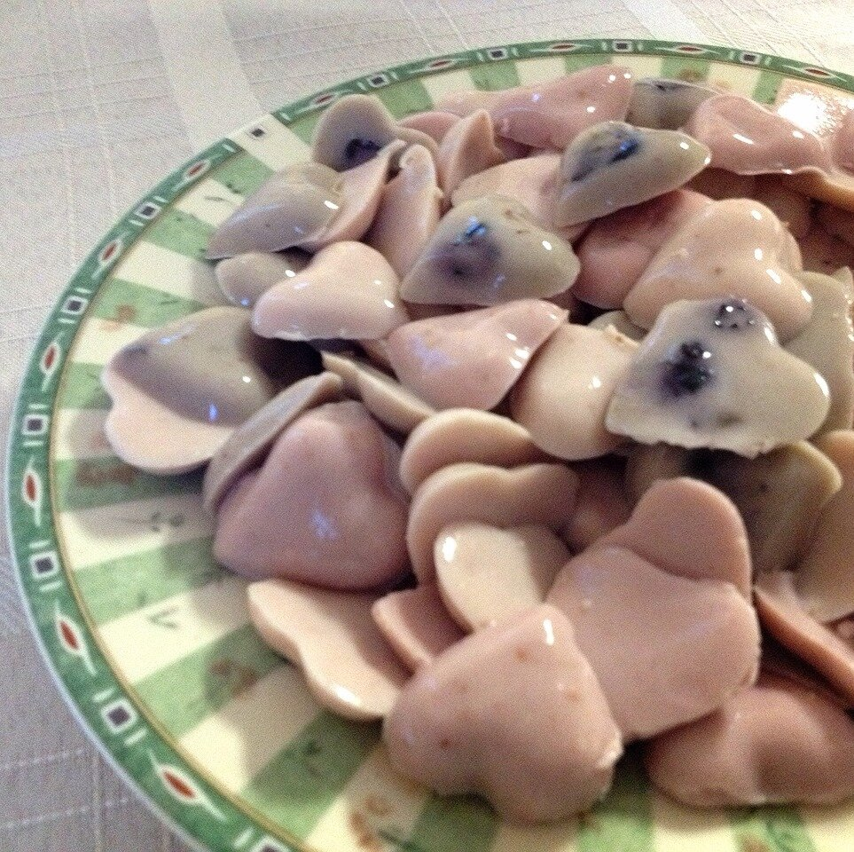
Berries and Cream Protein GummiesYields: 100-120 gummies
- 1/2 cup berry of choice (frozen or fresh)
- 4.5 oz plain greek yogurt
- 2 scoops Vi-Shape Mix
- 4 stevia packets
- 3 unflavored gelatin packets (7g each packet)
- 2/3 cup boiling water
First, prepare your fruit. You can use any fruit you want really, but I made 3 different batches - one with blueberries, one with raspberries, and one with strawberries. I use frozen fruit but fresh will be great! Puree your fruit in a blender (if frozen, microwave for 30 seconds first).
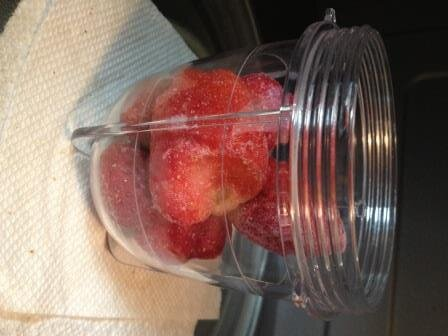
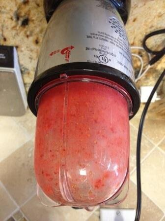
Next, in a medium bowl, mix your greek yogurt, Vi-Shape Mix, and stevia until it's even. It should be nice and fluffy!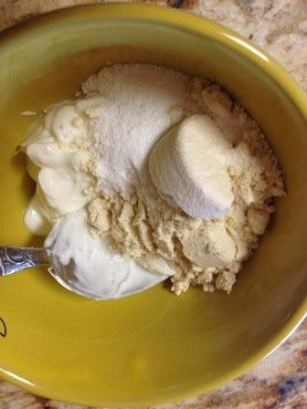
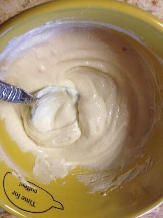
Once you've got these two things prepared, bring 2/3 cup of water to a boil. I just microwave mine :p Slowly whisk the boiling water in with 3 packets of unflavored gelatin until the gelatin is fully dissolved. Then, pour and whisk in your pureed fruit.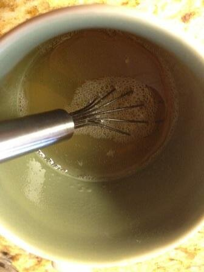
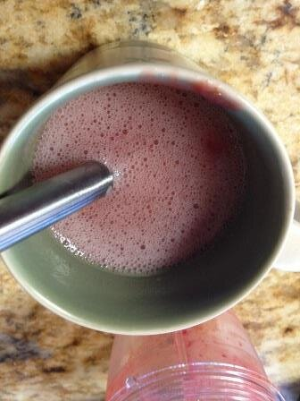
Finally, slowly pour the fruit/gelatin mixture into the yogurt/protein mixture and stir until even. It will be very soupy!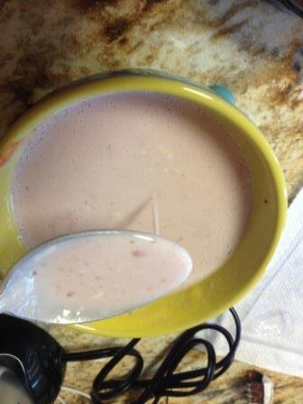
Now you want to pour the mixture into candy molds. You will need several molds since the recipe will make 100-120 gummies and each mold only has enough for 20 gummies. I bought mine for 1.99 each!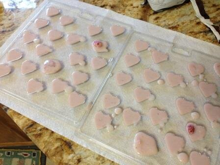
Place your molds in the fridge for an hour. Your gummies are set when the hour is up! Remove them by gliding a butter knife or other blunt object behind them. It's a lot easier than I expected to remove them :)ENJOY. Store them in the fridge. They will hold at room temperature BUT they melt in a car sitting in hot, Georgia heat O_O I found out the hard way...Nutritional information for the entire recipe: 290 calories, 1g fat, 18g carbs (7g fiber, 10g sugar), and 47g protein. Nutritional information for 20 gummies (1 mold): 52 calories, 0.2g fat, 3g carbs (1g fiber, 2g sugar), and 8g protein.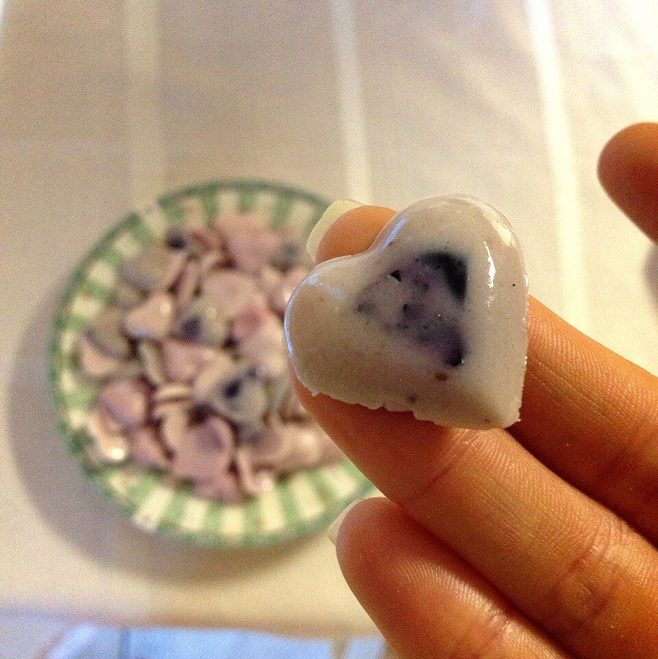
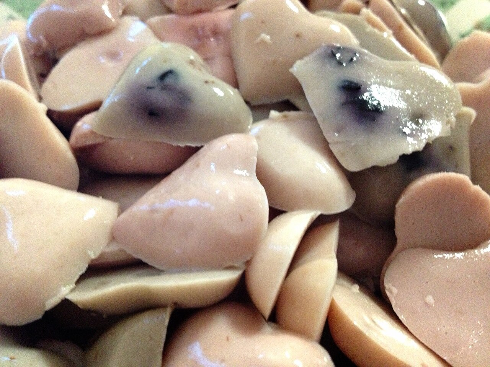